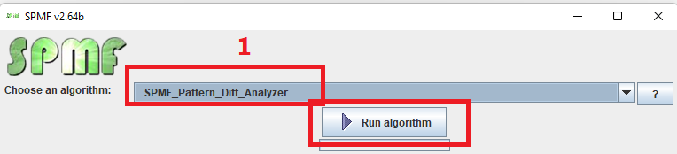
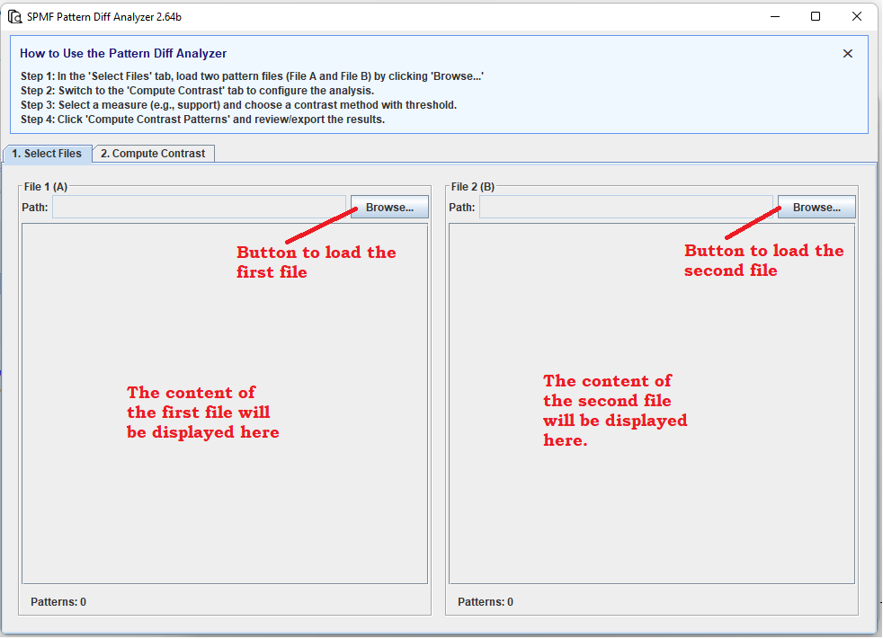
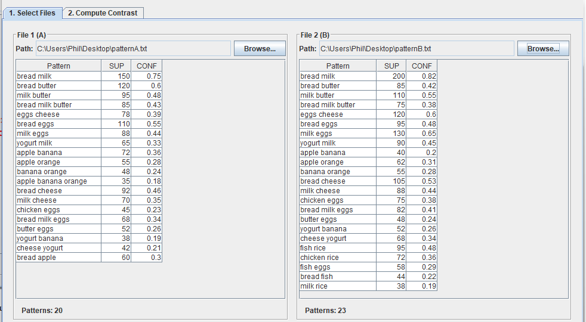
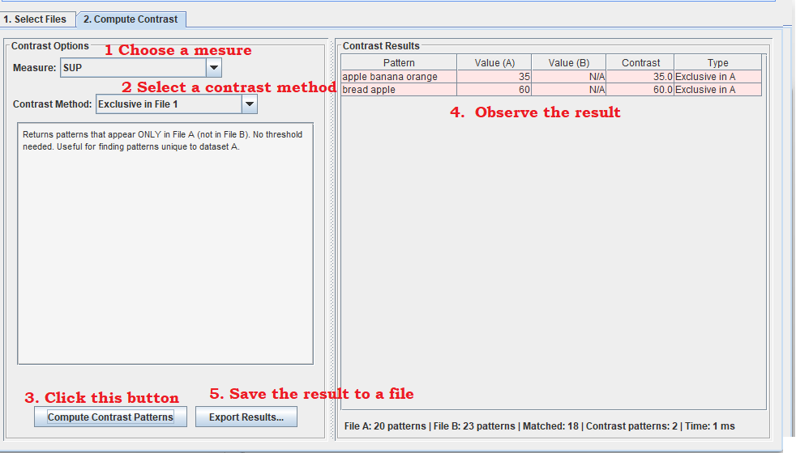

Compare two pattern files with the SPMF Pattern Diff Analyzer (SPMF documentation)
SPMF provides a simple tool that allows to compare two files containing patterns to find the difference between these files. It is called the SPMF Pattern Diff Viewer.
This webpage explains how to use this tool with an example.
How to run this example?
If you want to run this example from the graphical interface of SPMF, (1) choose the "SPMF_Pattern_Diff_Analyzer" algorithm and (2) click "run algorithm"

- If you want to run this example from the source code of SPMF, run the file MainTestARFFViewer, which is located in the package ca.pfv.spmf.tests
- If you want to execute this example from the command line interface of SPMF, then execute this command:
java -jar spmf.jar run SPMF_Pattern_Diff_Analyzer
What will be displayed?
A window will be opened that allows to compare two files containing patterns.

To use this window, click on the BROWSE button on the left to select a file, and then click on the BROWSE button on the right to select another file.
For this example, we will use the files patternsA.txt and patternsB.txt that are provided with SPMF in the folder ca.pfv.spmf.test or in test_files.zip from the download page of SPMF.
But any pair of files containing patterns generated by a same algorithm can be used.
After loading the twofiles we can see the previw:

Then, we can click on the second TAB called "2. Compute contrast" to find the patterns that have differences between the two files. The operations that can be done from this TAB are illustrated below.
The first step is to select a measure. Here we choose the support (SUP).
The second step is to choose a method for comparing the two files. In this example, we choose the method "Exclusive in File 1", which means that we want to find all the patterns that appear in File 1 but not in File 2. Several other contrast method are available and a description of each of them is provided in the user interface.
The third step is to click the "Compute Contrast Patterns" button. Then the results will be displayed on the right panel.
Finally, the last step is to click the button "Export Results" if we want to save the result of the analysis to a file.
